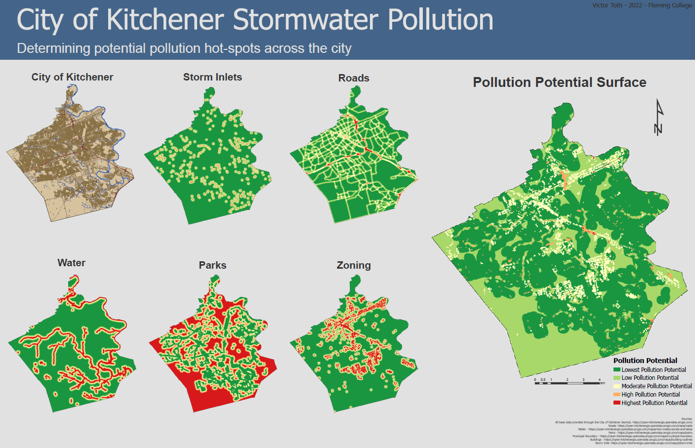
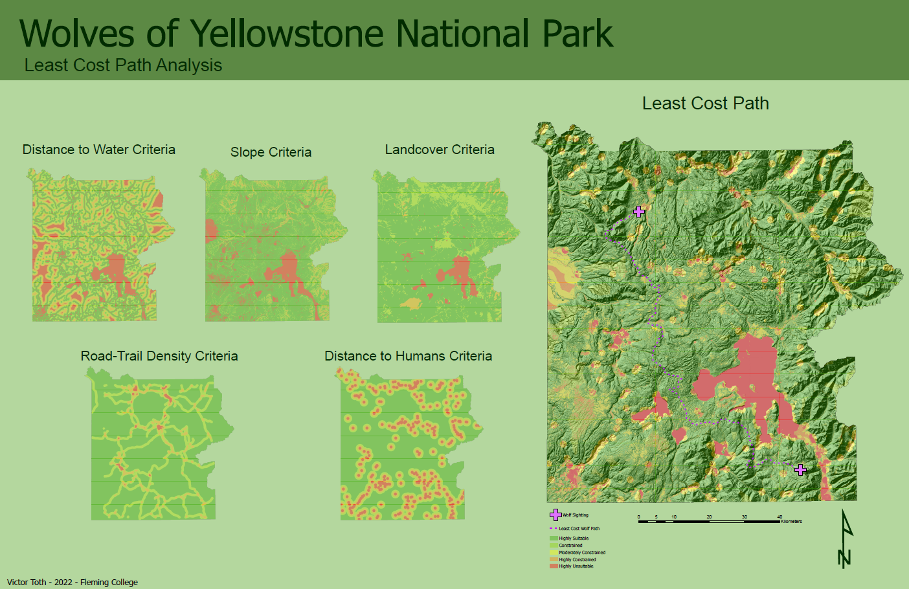
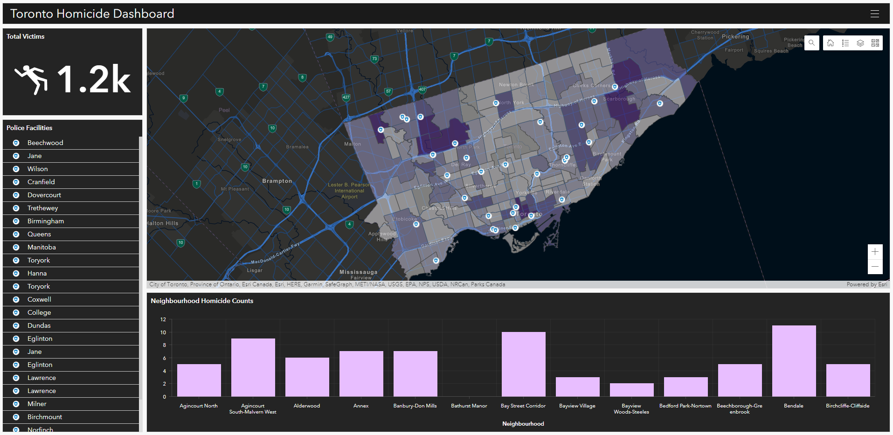

2022 - Fleming College, Spatial Analysis II
Final map presenting the results of a Multi-Criteria Decision Analysis (MCDA) of stomwater pollution potential in the city of Kitchener, ON.
2022 - Fleming College, Spatial Analysis II
Final map presenting the results of a Least Cost Path Analysis of predicted wolf travelling routes in Yellowstone National Park.
2021 - Fleming College, Spatial Analysis I
A simple ArcGIS Dashboard used to present homicide frequency per neighbourhood. Neighbourhoods are symbolized with darker colours corresponding to higher incidents. Location of Police Facilities are also presented.